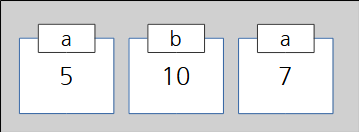
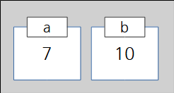

- 문자열
- 정수형(integer)
- 실수형(float)
- 참/거짓형(boolean)
>>> a = 5
>>> b = 10
>>> a = 7


- 
- 
>>> a = 1
>>> b = a + 0.1
>>> print (b)
- 1 + 0.1
- 1.01
- 10.1
- 1.1
>>> a = 1
>>> b = a + 0.1
- 문자열
- 정수형(integer)
- 실수형(float)
- 참/거짓형(boolean)
>>> 5 // 3
- 1
- 1.6666666666666667
- 2
- 3
>>> 5 % 3
- 1
- 1.6666666666666667
- 2
- 3
>>> 3 ** 3
- 9
- 33
- 27
- 45
>>> a = "올해 연도 : "
>>> b = 2024
>>> c = a + b
- 에러가 발생한다.
- ‘올해 연도 : 2024’
- ‘올해 연도 :’
- ‘2024’
- 문제없이 실행된다.
- c = a + b 를 c = a + len(b)로 수정한다.
- c = a + b 를 c = str(a) + b로 수정한다.
- c = a + b 를 c = a + str(b)로 수정한다.
>>> a = 2024
>>> b = "올해 연도 : {0}".format(a)
>>> b
- 에러가 발생한다.
- ‘올해 연도 : 2024’
- ‘올해 연도 :’
- ‘2024’
>>> a = "올해 연도 : {0}"
>>> b = 2024
>>> c = a.format(b)
>>> c
- 에러가 발생한다.
- ‘올해 연도 : 2024’
- ‘올해 연도 :’
- ‘2024’
- 변수 하나로 많은 양의 자료를 관리할 수 있다.
- 파이썬은 사용할 수 있는 변수의 갯수가 128개로 정해져 있다.
- 자료마다 변수를 생성하는 것은 매우 불편하고 사실상 그렇게는 개발이 불가능하기 때문
- 개발의 편리함때문
>>> a = ['짜장', '짬뽕', '탕수육', '회']
>>> a[2]
- ‘짜장’
- ‘짬뽕’
- ‘탕수육’
- ‘회’
>>> a = ['짜장', '짬뽕', '탕수육', '회']
>>> a[2] = '깐풍기'
>>> a
- [‘짜장’, ‘짬뽕’, ‘탕수육’, ‘회’]
- [‘짜장’, ‘짬뽕’, ‘깐풍기’, ‘회’]
- ‘깐풍기’
- 에러가 발생하고 값을 바꿀 수 없다.
>>> a = ['짜장', '짬뽕', '탕수육', '회']
>>> a.append("육회")
>>> a
- [‘짜장’, ‘짬뽕’, ‘탕수육’, ‘회’]
- [‘짜장’, ‘짬뽕’, ‘탕수육’, ‘회’, ‘육회’]
- ‘육회’
- 에러가 발생하고 값을 바꿀 수 없다.
>>> a = ['짜장', '짬뽕', '탕수육', '회']
>>> ???
>>> a
['짜장', '짬뽕', '깐풍기', '탕수육', '회']
- a.insert(0, ‘깐풍기’)
- a.insert(1, ‘깐풍기’)
- a.insert(2, ‘깐풍기’)
- a.insert(3, ‘깐풍기’)
>>> a = ['짜장', '짬뽕', '탕수육', '회']
>>> ???
>>> a
['짜장', '탕수육', '회']
- del a[0]
- a.del[0]
- del a[1]
- a.del[1]
>>> 2 < 5
???
>>> 5 < 2
???
- True, True
- True, False
- False, True
- False, False